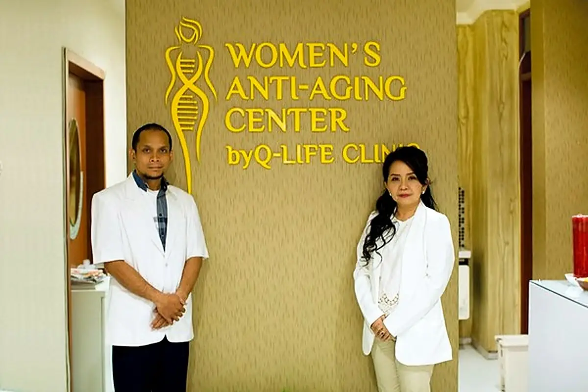

01
Rute · Infus
O₃ · Terukur
Terapi Ozone Bubble (INFUS)
Terapi melalui jalur infus intravena sesuai evaluasi dan pengawasan medis.
Pusat terapi komplementer, perawatan paliatif, dan Medical Ozone Therapy: pendekatan medis holistik yang terintegrasi untuk mempertahankan kualitas hidup pasien penyakit kronis dan degeneratif sampai mencapai healthy aging.
Sejak 2004 di Surabaya
Rating langsung dari profil Google Maps Q-Life Klinik: penilaian nyata pasien terhadap kualitas pelayanan, terapi, dan pendampingan medis kami.
Protokol terapi komplementer terstandar, diintegrasikan dengan perawatan medis konvensional untuk penyakit kronis dan onkologis.

Ozone (O₃) medis dialirkan ke tubuh bersama oksigen, melalui kulit, otot atau darah, untuk: mengatasi inflamasi, nyeri, virus, bakteri, candida, dan parasit.
Pelajari lebih lanjut →
Perawatan paliatif holistik bagi pasien dengan penyakit lanjut: manajemen gejala, dukungan psiko-sosial-spiritual.
Pelajari lebih lanjut → Kecantikan
KecantikanTerapi Ozone anti-inflamasi dan perawatan estetika berbasis regenerasi sel, dengan pengawasan medis.
Pelajari lebih lanjut →Unduh brosur resmi untuk mengenal ringkasan layanan sebelum berkonsultasi.
Terapi komplementer kami dirancang sebagai adjuvan: mendukung efektivitas terapi utama pasien, menekan efek samping, dan menjaga kualitas hidup.

Mengurangi dampak toksisitas kemoterapi, radiasi, dan terapi farmakologis jangka panjang.
Mendukung pemulihan fungsi imun dan kualitas hidup pasien penyakit kronis secara bertahap.
Menangani aspek biologis, psikologis, sosial, dan spiritual: bukan hanya manifestasi penyakit.
Ozone medis (O₃) dosis 0,05–0,5% dihantarkan ke tubuh bersama oksigen lewat rute yang berbeda — dipilih presisi sesuai kondisi tiap pasien. Susuri kesembilan metode beserta cara kerjanya.

Terapi melalui jalur infus intravena sesuai evaluasi dan pengawasan medis.
Injeksi Ozone dosis kecil secara intramuskular. Merangsang respons imun tubuh secara bertahap — titik awal bagi banyak pasien.
Autohemotherapy — sebagian darah pasien diambil, diperkaya Ozone, lalu dikembalikan ke tubuh. Metode paling banyak diteliti secara klinis.
Insuflasi Ozone pada area kewanitaan untuk menjaga kesehatan dan keseimbangan flora area intim secara non-invasif.
Penyerapan Ozone melalui mukosa rektal secara non-invasif. Efektif untuk kondisi sistemik tanpa jarum.
Aplikasi Ozone topikal untuk luka kronis dan permukaan kulit. Mempercepat penyembuhan luka yang sulit sembuh.
Extracorporeal Blood Oxygenation Ozonation — seluruh sirkulasi darah dioksigenasi dan disaring. Terapi Ozone paling menyeluruh.
Terapi Ozone berbasis cairan tubuh untuk detoksifikasi menyeluruh dan keseimbangan metabolisme.
Perawatan wajah dengan pendekatan Ozone yang disesuaikan setelah asesmen kulit.
 Q-Life · Medis
Q-Life · MedisPraktisi Palliative Care, Integrative Medicine & Anti-Aging
Narasumber kesehatan RRI Surabaya & talkshow JTV. Praktik Senin–Sabtu, 10.00–16.00.
Lihat profil → Q-Life · Medis
Q-Life · MedisPraktisi Akupunktur, Sujok & Anti-Aging
Akupunktur (LP3A, 2000) & hipnoterapi berlisensi NFNLP (2010). Praktik Senin–Sabtu, 10.00–16.00.
Lihat profil →Q-Life Klinik adalah pusat terapi komplementer, perawatan paliatif untuk kanker dan penyakit kronis, dilengkapi dengan Medical Ozone Therapy. Selama dua dekade lebih, kami sudah melayani pasien secara holistik, sepenuh hati dan bermartabat.

"Kami ada karena Anda: memberikan perawatan kesehatan yang bermutu dan bermartabat."
Menjadi pelayanan kesehatan yang berbasis Kedokteran Komplementer yang terdepan di Indonesia, terutama untuk pelayanan paliatif (Palliative Care).
Suasana nyata layanan Women's Anti-Aging Center dan terapi komplementer kami.





Konsultasikan kondisi Anda dengan tim medis kami. Penjadwalan janji temu tersedia Senin–Sabtu.


Pengalaman yang mereka bagikan.
Cuplikan ulasan publik dari profil Google Maps Q-Life Klinik. Baca semua ulasan di Google Maps